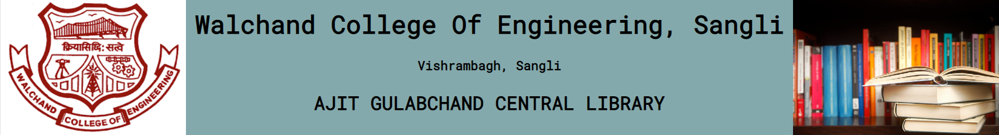
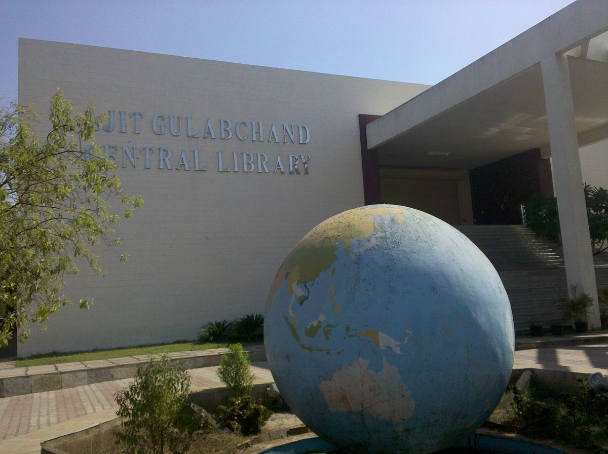

About Us
A New state of art Library worth 4,680 sq.mt. Constructed is a generous
donation received from “Walchand Hirachand Memorial Trust” Mumbai and
renamed as “Ajit Gulabchand Central Library”. The spacious library of the
college holds the total collection of reading material 106715 including
55480 Books, 13064 Bound Volumes of Technical / Non-Technical Journals,
Magazines, 38171 Book Bank Books accumulated over last six decades. It
subscribes to 80 Technical, 8 Science and 7 General Journal / Magazines.
This library is member of INDEST under which we receive 20212+ Online
journals including IEEE(464), IEEE Conference(19407), ASCE(36), ASME (30),
Science Direct(275) and 2163 e-books.
Library is having Membership of DELNET, New Delhi for Inter Library Loan,
Reference facility and document delivery services. Library is also participate
N-LIST Inflibnet program through membership for e-journal and e-books.
Digital Library : A separate section is dedicated to digital library in AGC library
where 60 terminals where provided. Library has purchased and developed with
association of CCF, E-learning resources worth Rs.30 lacks and loaded at Central
Server at CCF, This facility can be available from anywhere in the entire campus by
students and staff as well. CD server is available for research student.
Library issue 1200 to 1300 book sets under book bank schemes including Social
Welfare Department Free Book Bank Scheme for SC / ST scholarship holder students and
also we issue TEQIP Tribal Book Bank free book bank for other categorized student.
Reading Hall facility is available round the clock for full year and provides study
room facility during normal and extended hours.
Statistics
| 1 |
Total Area of Library |
4680 sq.mt. |
| 2 |
Library Staff |
8 |
| 3 |
Total Number of Readers |
3466 |
| 4 |
Total Number of Books |
55480 |
| 5 |
Total Book Bank Books |
38171 |
| 6 |
Total Number of Titles |
42250 |
| 7 |
Total Bound Volumes of Periodicals |
13064 |
| 8 |
Proceedings |
263 |
| 9 |
Total No. of M.E. Dissertations |
2408 |
| 10 |
Educational Video Cassettes |
77 |
Facilities
- Open Access to All Users.
- Staff 10 Books issued for one Semester.
- All P.G. Students 4 Books issued for 15 days.
- All Degree Students 2 Books issued for 7 days.
- All Diploma Students 1 Book issued for 7 days.
- Online Public Access Catalogue Facility (OPAC) Camp wide connectivity on Intranet.
- Book Bank Facility to More than 1200 Students.
- Free Book Bank Facility to SC/ST Scholarship Students.
- Information Retrieval Lab (Internet) facility to all Readers.
- Reference Service, Current Awareness Service.
- E-Journal & E-Books facility to all readers/Digital Library on Intranet.
- Reprography Facility
- Audio/Video Facility available in the library.
- Inter-Library Loan Facility.
- CMTI, Bangalore & DELNET Membership for Document Delivery Facility
- N-List Inflibnet membership for e-journal & e-books
- CD Server & Language Lab Facility
FACULTIES
| Sr.No |
Name |
Designation |
Nature of association |
| 1 |
Dr. B. F. Momin |
Associate Professor |
Regular |
| 2 |
Mr. A. R. Surve |
Assistant Professor |
Regular |
| 3 |
Dr. M. A. Shah (HOD) |
Assistant Professor |
Regular |
| 4 |
Dr. N. L. Gavankar |
Assistant Professor |
Regular |
| 5 |
Mr. M. K. Chavan |
Assistant Professor |
Regular |